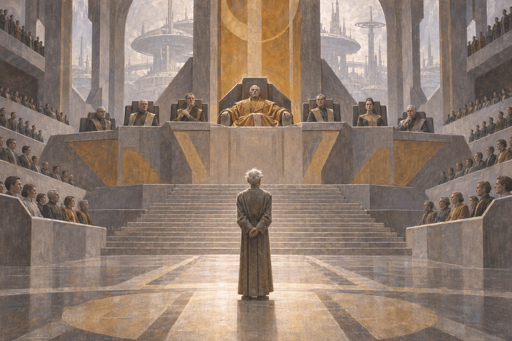
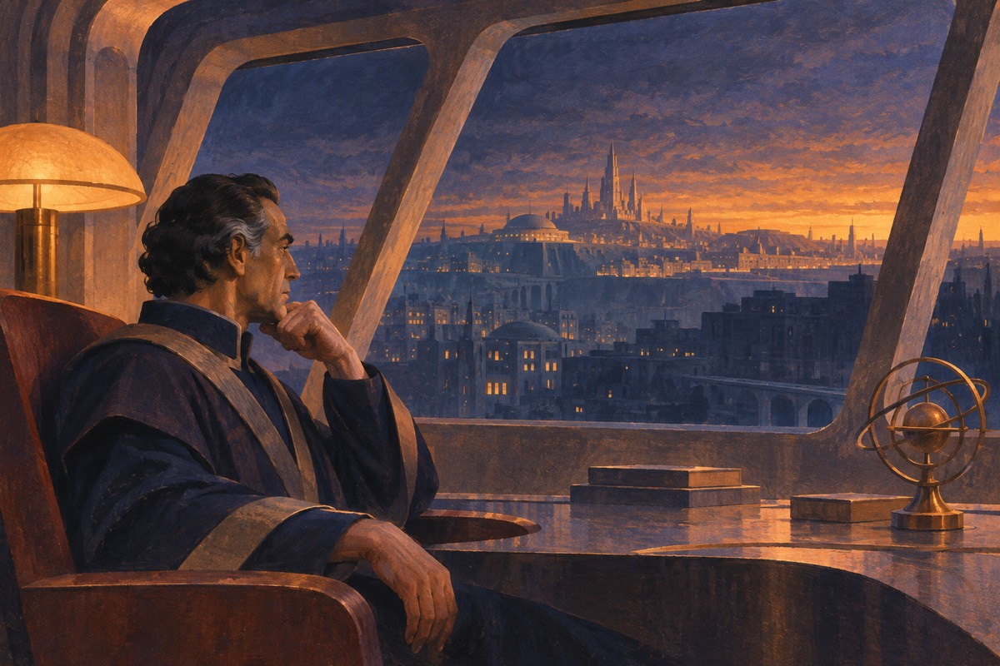

帝都川陀
帝国的首都川陀是一颗城市行星，行政机构依靠外部星球供应食物。数学家哈里·谢顿从赫利肯来到川陀，在十年一届的数学大会上报告：大规模社会的发展也许可以用数学预测。此时他提出的是理论上的可能性。
出处 · 《基地前奏》开篇；《基地》第一部〈心理史学家〉

克里昂召见谢顿
数学大会的消息传到克里昂一世那里。皇帝召见谢顿，关心这种理论能否用来预知政治局势；谢顿表示现阶段无法实际预测。离宫后，记者切特·夫铭向他谈到帝国的衰落，劝他认真发展这门学问，并帮助他离开帝国权力中心。
出处 · 《基地前奏》〈皇帝〉、〈逃亡〉
铎丝与谢顿结伴
谢顿到史璀璘大学避居，认识了研究历史的铎丝·凡纳比里。铎丝受夫铭之托保护他，后来陪他前往川陀各区。他们既是长期的伴侣，也在帝都政治与秘密研究交织的年月里彼此扶持。
出处 · 《基地前奏》〈史璀璘大学〉；《迈向基地》
从理论走向实证
在切特·夫铭的劝说下，谢顿开始研究怎样把心理史学付诸实践。川陀汇集了众多不同的社会，既有帝都共同的行政秩序，也有各区截然不同的风俗。谢顿辗转数区，逐渐意识到可以从这一颗星球入手，把过于庞大的研究对象缩小到可处理的范围。
出处 · 《基地前奏》〈史璀璘大学〉至结尾
心理史学的前提
心理史学面向数量极大的人群，研究人类集体行为的趋势。个体选择仍难预测；预报本身也可能改变当事人的行为，因此受预测的人群须对预测结果保持不知情。这些限制后来直接影响谢顿如何布置与隐藏两个基地。
出处 · 《基地》第一部〈心理史学家〉
克里昂遇刺
帝国的内部危机逐步暴露，谢顿继德默泽之后任首相。克里昂一世被宫廷园丁曼德尔·格鲁伯刺杀，帝国随后落入军政府手中。谢顿的研究必须在政权更替与愈发恶化的环境中继续。
出处 · 《迈向基地》第二部〈克里昂一世〉末
铎丝的最后行动
皇宫政变之后，谢顿继续研究心理史学。铎丝追查威胁谢顿的阴谋时，发现学者阿玛瑞尔的研究同一场针对谢顿的技术阴谋有了交集。她最终制止了塔米威尔·艾拉，并因遭到针对机器人电路的装置伤害而停机。
出处 · 《迈向基地》第三部〈铎丝·凡纳比里〉
公共安全委员会审问谢顿
公共安全委员会拘捕谢顿及初到川陀的数学家盖尔·多尼克，质疑谢顿有关帝国衰亡的判断。谢顿称首都将在五百年内毁灭，帝国崩溃后动荡可能持续三万年；适当干预可以把这段时期缩短到约一千年。委员会必须决定如何处置这个已经组织起来的研究计划。
出处 · 《基地》第一部〈心理史学家〉第5–7节

两座基地的布局
被呈给委员会的公开项目是编纂一部保存知识的银河百科全书。谢顿把这项工作作为建立第一基地的掩护，同时安排另一个基地保存、发展心理史学；它的位置属计划的核心秘密。两者承担不同的任务，共同为帝国崩溃后的社会准备出路。
出处 · 《基地》第一部〈心理史学家〉、第二部〈百科全书编纂者〉；《第二基地》末章
编纂者迁往端点星
委员会同意让百科全书项目迁到银河边缘的端点星，使谢顿的工作离开首都。移民及家属在当地建立第一基地。谢顿留在川陀；日后端点星的继承者是在时间穹顶观看生前预录的影像，才听他逐步说明计划。
出处 · 《基地》第一部末；《迈向基地》尾声
时间穹顶第一次开启
安纳克里昂对端点星施压，百科全书委员会仍指望帝国和谈判解围。谢顿的影像按预定时间出现，告诉编纂者，百科全书原本就是让基地在端点星立足的掩护。此时，端点星人必须在没有帝国保护的情况下自行解决眼前的政治危机。
出处 · 《基地》第二部〈百科全书编纂者〉末
哈定夺回决策权
端点星市长哈定看清委员会无力应付四个邻国，推动权力从百科全书编纂者转入市政体系。他利用四国之间的竞争，促使另外三国反对安纳克里昂独占基地。端点星科学技术的价值，成了哈定在军事力量悬殊时的筹码。
出处 · 《基地》第二部〈百科全书编纂者〉末；第三部开篇
科学技术穿上宗教外衣
第一基地向周边王国提供核能装置，并以宗教组织训练维护设施的技术人员。对王国民众而言，基地的技术以教仪和神迹的形式出现；对基地而言，这套体系既能传播技术，也能在受到军事威胁时切断对方使用设备的条件。
出处 · 《基地》第三部〈市长〉
安纳克里昂的两次威胁
起初，哈定利用四国之间的制衡阻止安纳克里昂吞并端点星。约三十年后，摄政威恩尼斯借修好的旧帝国战舰准备进攻。当地教士抵制王室的战争命令，基地技术所维持的设备和舰船也随之失效。第二次威胁最终被哈定布置多年的宗教网络化解。
出处 · 《基地》第二部〈百科全书编纂者〉、第三部〈市长〉

贸易越过四王国
基地的行商带着便携的核能商品沿商路前往周边世界。林玛·彭耶茨到禁止核能器物的阿斯康营救被扣押的同行。他用当地权贵的利益打开交易机会，也让第一基地看到宗教网络以外的扩张途径。
出处 · 《基地》第四部〈行商〉
马洛访问科雷尔
行商侯伯·马洛去科雷尔调查基地飞船失踪。他在当地推销商品，也发现科雷尔掌握仍带有帝国标志的核武器。从这项证据出发，他进一步追查帝国还剩多少力量。返回端点星后，马洛又因拒绝收留自称基地教士的人而面临审判，并在审判中揭破圈套。
出处 · 《基地》第五部〈商业王侯〉
马洛以贸易应战
马洛担任市长后，科雷尔开战。他判断封锁会先打击依赖基地商品的科雷尔民生与工业，没有选择以舰队正面决战。随着设备缺少补给、经济压力积累，科雷尔最终投降。基地的影响力由教士控制的技术体系转向贸易。
出处 · 《基地》第五部〈商业王侯〉末
帝国将领的进攻
仍有战力的帝国将领贝尔·里欧斯进攻基地，但前线的成功反而令皇帝克里昂二世疑忌。他被召回并处死，进攻随即中止。帝国与基地之间的胜负同时取决于前线军力和帝国内部的权力关系。
出处 · 《基地与帝国》第一部〈将军〉
骡打破预测
骡能够改变别人的情绪，使敌手失去斗志，也能把强烈的忠诚变成征服的手段。第一基地面对的是心理史学未能预见的个人能力，无法再按谢顿影像给出的历史大势理解局势。
出处 · 《基地与帝国》第二部〈骡〉
以弄臣身份随行
贝泰与杜伦在卡尔根接走一个自称马格尼菲科的弄臣。他瘦弱畏缩，自称逃离骡的统治，此后随两人行动。马格尼菲科的身份要等到众人抵达川陀、寻找第二基地时才被揭穿。
出处 · 《基地与帝国》〈骡〉之卡尔根段落
端点星落入骡之手
骡的军队逼近时，端点星人聚到时间穹顶，希望谢顿指出出路。影像谈的是本应发生的内乱，丝毫没有提及骡。第一基地随后失陷，谢顿计划出现需要另一个基地纠正的巨大偏差。
出处 · 《基地与帝国》〈谢顿的出现〉、〈基地陷落〉
末任帝国朝廷的猜忌
端点星失陷后，贝泰、杜伦、心理学家密斯与马格尼菲科来到新川陀，面对残存的帝国朝廷。在朝廷对他们起疑之际，马格尼菲科的表演使众人得以脱身。他们继续前往旧都川陀，寻找有关第二基地的线索。
出处 · 《基地与帝国》〈死亡之手〉等新川陀段落
线索汇入旧都
密斯在旧都的图书馆翻查历史材料，试图解开谢顿所说的银河另一端。贝泰观察到他们的同行者马格尼菲科对这项调查格外关切，开始把旅途中看似互不相干的异常联系在一起。
出处 · 《基地与帝国》〈死世界〉、〈终结〉
贝泰阻止密斯公布答案
在川陀，密斯快要说出第二基地的所在。贝泰先一步开枪，阻止地址被马格尼菲科听见。她认出这个一直随行的弄臣就是骡；骡没有改动贝泰对他的善意，这也给了贝泰作出选择的余地。
出处 · 《基地与帝国》〈终结〉
第一发言人制止骡
骡随后派贝尔·钱尼斯寻找第二基地，调查在塔森行星落入第二基地布下的局。第一发言人趁骡被情势动摇的时刻改变他的心智，使他放弃继续寻找第二基地，回去治理自己的领土。
出处 · 《第二基地》第一部〈骡的寻找〉末
第一基地试图摆脱监护
骡败退之后，第一基地仍担心第二基地能够左右自己的决定。阿卡迪亚·达瑞尔亲历了围绕卡尔根的调查和战争，她的父亲托兰·达瑞尔等人则试图用技术找出并抵御心灵干预。
出处 · 《第二基地》第二部〈基地的寻找〉
端点星上的假线索
第一基地查出一批隐藏在端点星上的心灵能力者，以为已定位并消灭第二基地。这个结论符合它摆脱监视的愿望，也正是另一方希望它相信的结果。
出处 · 《第二基地》第二部末
真正的第二基地留在川陀
第二基地以牺牲小组和假线索诱导第一基地停止寻找。第一发言人与学生的对话揭示，真正的第二基地位于旧帝都川陀。谢顿所说的另一端可以从银河政治与历史的格局理解，川陀与边陲的端点星分处这个格局的两端。
出处 · 《第二基地》末章〈答案确凿〉
盖娅共享意识
崔维兹被端点星市长布兰诺遣出银河政治中心，与研究地球传说的裴洛拉特同行。在盖娅，他们遇到布洛缀克，得知星球上的人、动植物与无机物一起参与同一个意识，具有不同程度的感知。
出处 · 《基地边缘》〈盖娅〉等末段
布洛缀克和裴洛拉特
裴洛拉特接触盖娅的生活后，对布洛缀克和她所在的共同体产生亲近感。盖娅中的个人仍有各自的身份，可以在别处行动；布洛缀克仍与盖娅相连，并将和崔维兹、裴洛拉特同行。
出处 · 《基地边缘》末段；《基地与地球》第1章
银河未来的三种可能
布兰诺代表以科技与武力为基础的第一基地，詹迪柏代表能影响心灵的第二基地。盖娅希望让整个银河发展成共同意识。三方在盖娅附近对峙时，盖娅将决定交给有特殊判断能力的崔维兹。
出处 · 《基地边缘》末章〈选择〉
崔维兹选择盖娅的道路
崔维兹选择让盖娅逐步发展为覆盖银河的共同意识。盖娅随后解除对峙。这项决定已经作出，但崔维兹仍想查明自己的判断究竟依据什么，便从人类故乡的谜团入手。
出处 · 《基地边缘》末章〈选择〉；《基地与地球》第1章
从传说出发寻找地球
渴望解释自己决定的崔维兹，同裴洛拉特和布洛缀克一起寻找地球。裴洛拉特多年收集的传说让他们能从人类最早的移民世界入手。他们到康普隆寻找线索，再沿这些早期星球的坐标追查。
出处 · 《基地与地球》第1–7章
失落的地球档案
有关地球的旧记录很难找到，甚至保存在川陀的相关资料也已消失。崔维兹一行依据康普隆和后续探索获得的坐标，继续调查早期移民行星，没有就此放弃寻找人类起源世界。
出处 · 《基地边缘》裴洛拉特谈地球；《基地与地球》康普隆段落
抵达地球与月球
远征者终于定位地球，发现故乡已受严重放射性污染。崔维兹转而注意到那颗对于地球来说异常巨大的卫星。众人降落月球，在那里发现古老的机器人丹尼尔·奥利瓦。
出处 · 《基地与地球》第20–21章
月球上的会面
丹尼尔在月球基地介绍自己跨越数万年的经历，并说明他如何在人类未察觉时影响历史。地球档案的消失也与他保护故乡及其活动地点的安排有联系。崔维兹此时才得以把谢顿、盖娅与自己的远行放在同一条历史脉络中。
出处 · 《基地与地球》第21章〈寻找结束〉
丹尼尔与法洛姆
丹尼尔的脑已接近维持运作的极限，建立银河共同意识却还需要时间。他提出同此前被远征者从索拉利亚带走的孩子法洛姆融合心智。法洛姆的能力可能使他继续支撑盖娅的发展。
出处 · 《基地与地球》第21章〈寻找结束〉
崔维兹重新理解自己的决定
在月球基地，崔维兹意识到心理史学的一项前提是银河只需考虑人类。若银河之外还有未知的异类，分裂的人类社会可能难以应对，他因此理解自己为何曾选择盖娅的道路。小说最后将他的注意力引向一同来到月球的法洛姆，使人类与异类之间的界线仍成为问题。
出处 · 《基地与地球》第21章〈寻找结束〉